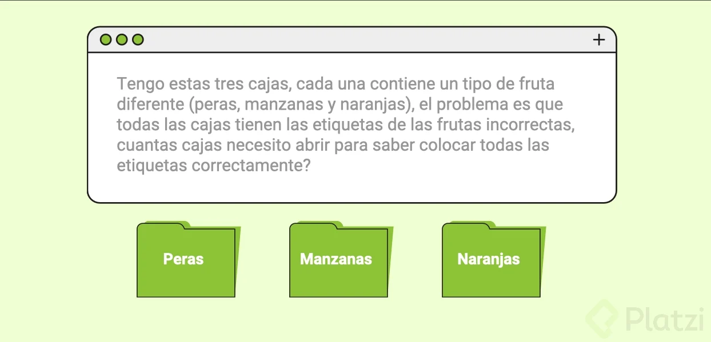
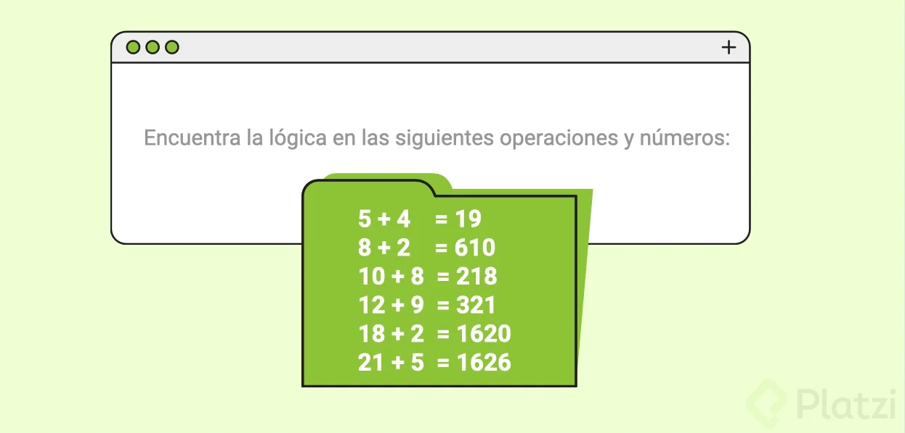
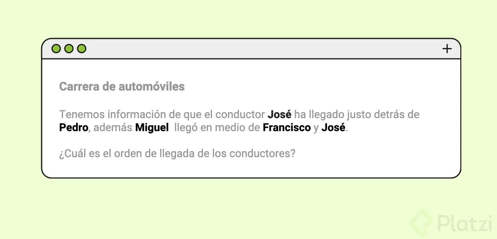
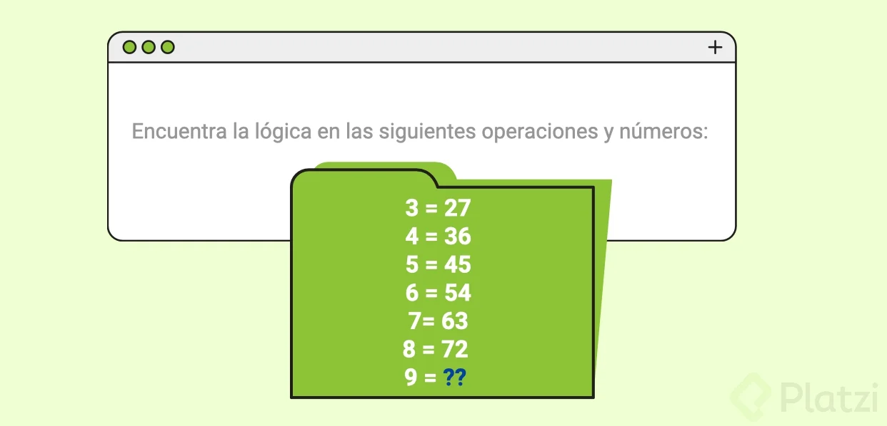
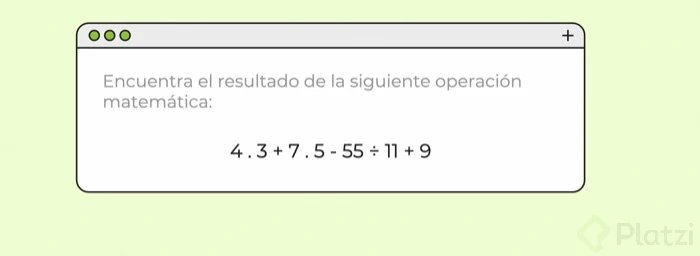
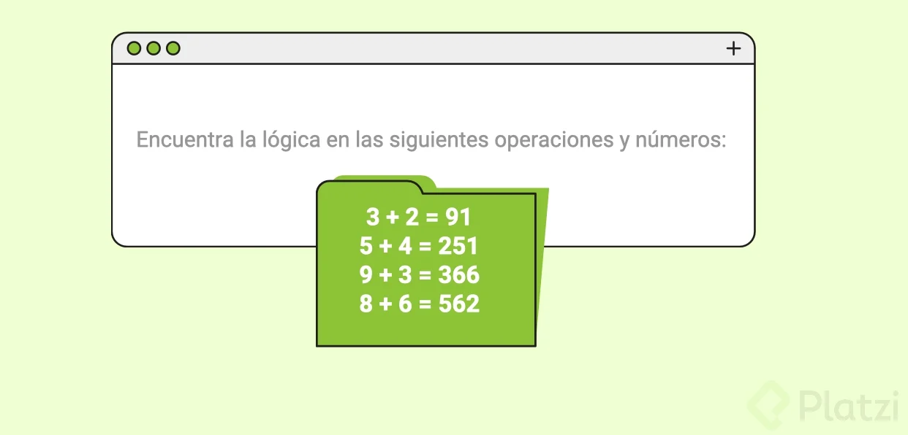

Ejercicio de Pensamiento Lógico 1

Descripción del reto
Tengo 3 cajas, cada una contiene un tipo de fruta diferente (peras, manzanas y naranjas). El problema es que
todas las cajas tienen las etiquetas de las frutas incorrectas. ¿Cuántas cajas necesito abrir para saber
colocar todas las etiquetas correctamente?
🍐 Peras
🍎 Manzanas
🍊 Naranjas
¿Qué esperamos de ti?
Se requiere dar solución al desafío de más arriba, toma en cuenta que este es un tipo de ejercicio
totalmente lógico, razón por la que nos olvidaremos del código en este desafío.
Para completarlo aplica los siguientes pasos:
Identifica posibles soluciones: piensa en como solucionarías este problema, en ocasiones puedes tener más de
una solución, por lo que te invito a que no te limites y desarrolles todas las soluciones que identifiques.
Socializa tus hallazgos con la comunidad: te invito a que compartas en la zona de comentario todas las
soluciones identificadas.
Toma el Quiz: en el quiz encontrarás las posibles respuestas a este problema, entre ellas la respuesta
correcta, recuerda que después del quiz encontrarás una nueva clase con la explicación del problema y su
solución.Descripción del reto
Tengo 3 cajas, cada una contiene un tipo de fruta diferente (peras, manzanas y naranjas). El problema es que
todas las cajas tienen las etiquetas de las frutas incorrectas. ¿Cuántas cajas necesito abrir para saber
colocar todas las etiquetas correctamente?
🍐 Peras
🍎 Manzanas
🍊 Naranjas
Ejercicio de Pensamiento Lógico 2

Descripción del reto
Encuentra la lógica de las siguientes operaciones y números:
5 + 4 = 19
8 + 2 = 610
10 + 8 = 218
12 + 9 = 321
18 + 2 = 1620
21 + 5 = 1626
¿Qué esperamos de ti?
Se requiere dar solución al desafío de más arriba, para esto necesitamos que dividas este ejercicio en dos
fases:
Fase 1: escribe tu solución
Identifica posibles soluciones: piensa en como solucionarías este problema, en ocasiones puedes tener más de
una solución, por lo que te invito a que no te limites y desarrolles todas las soluciones que identifiques.
Socializa tus hallazgos con la comunidad: te invito a que compartas en la zona de comentario todas las
soluciones identificadas.
Ejercicio de Pensamiento Lógico 3

Descripción del reto
Tenemos información de que el conductor José ha llegado justo detrás de Pedro, además de que Miguel llegó en
medio de Francisco y José.
¿Cuál es el orden de llegada de los conductores?
Ejercicio de Pensamiento Lógico 4

Descripción del reto
Encuentra la lógica en las siguientes operaciones y números:
3 = 27
4 = 36
5 = 45
6 = 54
7 = 63
8 = 72
9 = ??
¿Qué esperamos de ti?
Se requiere dar solución al desafío de más arriba, toma en cuenta que este es un tipo de ejercicio
totalmente lógico, razón por la que nos olvidaremos del código en este desafío.
Ejercicio de Pensamiento Lógico 5

Descripción del reto
Encuentra el resultado de la siguiente operación matemática:
4 * 3 + 7 * 5 - 55 ÷ 11 + 9
¿Qué esperamos de ti?
Se requiere dar solución al desafío de más arriba, toma en cuenta que este es un tipo de ejercicio
totalmente lógico, razón por la que nos olvidaremos del código en este desafío.
Ejercicio de Pensamiento Lógico 6

Descripción del reto
Encuentra la lógica en las siguientes operaciones y números
3 + 2 = 91
5 + 4 = 251
9 + 3 = 366
8 + 6 = 562
¿Qué esperamos de ti?
Se requiere dar solución al desafío de más arriba, toma en cuenta que este es un tipo de ejercicio
totalmente lógico, razón por la que nos olvidaremos del código en este desafío.